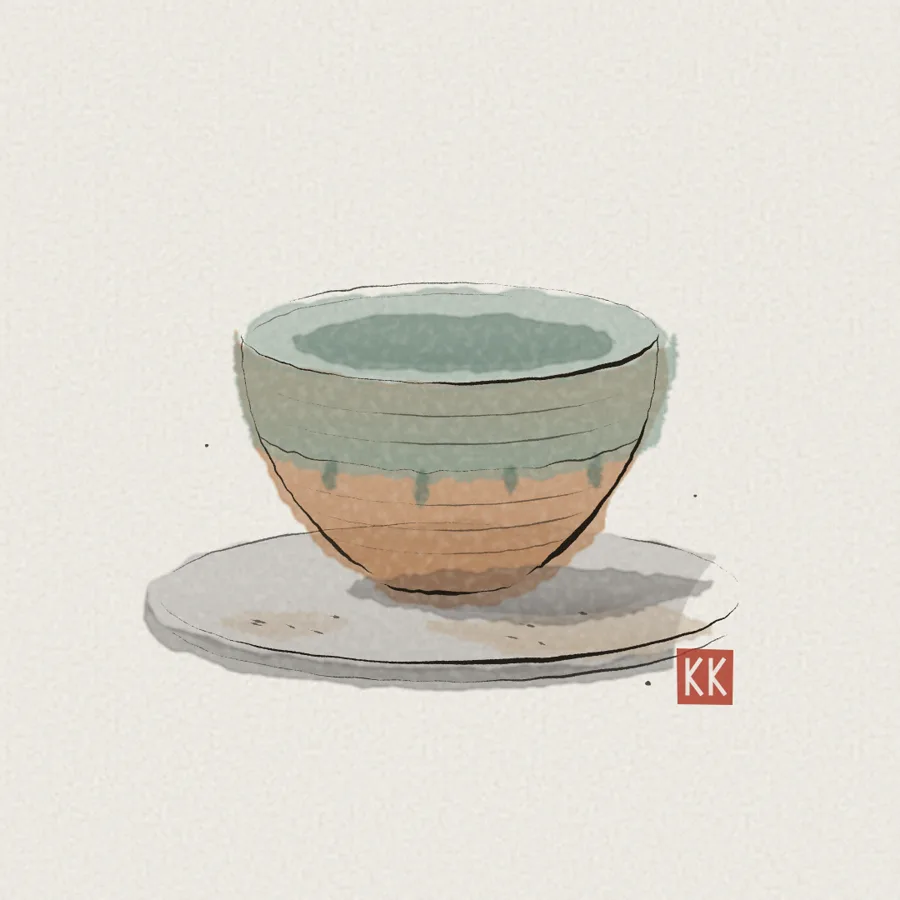

Çark
Önce çark ıslanır.
Çamur sıçrar, tezgâh kirlenir. Temiz bir kase kirli bir çarkta çekilir.
Konsept çalışma · gerçek işletme değil
Elde çekilen, odun fırınında pişen kaseler. Bir kasenin nasıl yapıldığını aşağıda, çizilirken izleyin.

Çark
Çamur sıçrar, tezgâh kirlenir. Temiz bir kase kirli bir çarkta çekilir.
Kil ve sır
İç yüz külden yapılmış yeşil bir sırla kaplanır. Dışarıda sır akar, damlalar olduğu gibi kalır.
Çizgi
Çarkın parmakla bıraktığı her halka kasenin üstünde görünür. Onları silmeyiz.
Mühür
Her kasenin altında atölyenin kırmızı mührü vardır. İki kase birbirinin aynısı olmaz.
Paket D · sayfa grameri
İmza hareket: kaydırdıkça kase elle çizilir. Geri kaydırınca aynı sırayla silinir. Çizim tamamen kodla üretilir; fotoğraf ya da video kullanılmaz.
Paket D · tam marka deneyimi
Kil & Kül kurgusaldır; sipariş alınmaz. Markanız için tek bir imza hareket etrafında kurulan bir sayfa isterseniz yazın.
aliulu@ai-ulu.com